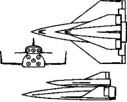

Противостояние «челноков»
Последнее время о них, к счастью, вспоминают все меньше. А ведь были времена, когда казалось, что военные действия в космосе начнутся не сегодня, так завтра. Насколько на самом деле была вероятна Третья мировая война в космосе? Каковы на самом деле были цели программы СОИ? Могут ли земляне извлечь хоть какую-то пользу из космических вооружений?
Давайте и поговорим об этом в заключительной главе нашей книги.
АВТО НА ОДНУ ПОЕЗДКУ? В начале 70-х годов XX века, когда начинались работы по созданию многоразовых транспортных космических кораблей (МТКК), необходимость в них обычно мотивировалась так.
«Представьте себе, — утверждал сторонник МТКК, — что творилось бы в наших городах, если бы каждый автомобиль предназначался лишь для одной поездки?! А ведь ныне получается именно так: каждый ракетный комплекс в сотни тонн теряется потом безвозвратно, засоряя землю и ее окрестности этаким „космическим мусором“…»
И дальше каждый в меру своего таланта расписывал, какие радужные перспективы сулит создание надежного, удобного в эксплуатации многоразового «космического самолета».
Однако на самом деле подобные рассуждения были не более чем дымовой завесой, за которой военные пытались скрыть истинную суть программы.
Причем если более откровенные в своих словах и действиях американцы даже особо и не скрывали милитаристской направленности своей программы, открытой президентом Ричардом Никсоном 5 января 1972 года, то наши военные первое время даже всячески отнекивались от предложений руководства нашей космонавтики. «Нам игрушки не нужны», — говорят, эти слова принадлежат министру обороны А. А. Гречко.
Ситуация коренным образом изменилась после того, как референт одного из членов Политбюро вычитал в иностранной прессе предположение о том, что, пикируя, «Шаттл» запросто сможет сбросить бомбу или ракету на любой объект на поверхности планеты и эффективного средства помешать этому не существует.
Тут уж встревоженные советские руководители решили немедленно создать аналогичный самолет. Как он должен был противодействовать атакам «Шаттла», и по сей день остается загадкой. Наверное, руководство СССР отталкивалось от аналогии с авиацией. Дескать, там налету авиации противника с большей или меньшей эффективностью могут противодействовать свои самолеты.
Так было положено начало еще одному противоборству двух великих держав.
РОЖДЕНИЕ «ШАТТЛА». Итак, по мнению экспертов США, с появлением космического корабля «Спейс Шаттл» («Space Shuttle» — «космический челнок») должен был произойти качественный скачок в области использования околоземного пространства в оборонных целях.
Во-первых, космический самолет, прозванный «челноком», вероятно, за принципиальную возможность сновать на орбиту и обратно не менее 100 раз, должен был, по идее, упростить и удешевить доставку самого различного снаряжения. И прежде всего, конечно, грузов военного назначения. А также обеспечить регулярное техническое обслуживание специальных космических систем нового поколения (читай: спутников-шпионов и прочего спецоборудования).
Во-вторых, это хороший инструмент для инспекции, захвата или уничтожения вражеских орбитальных аппаратов, испытания экспериментальных образцов космического оружия и т. д.
В-третьих, как уже говорилось, «Спейс Шаттл» мог, в принципе, использоваться и в качестве носителя ударных средств.
На конкурсной основе было рассмотрено несколько предложений от ведущих аэрокосмических фирм США.
Так, по проекту фирмы «Норт Америкен» предлагался космический корабль, рассчитанный на двух пилотов и 10 пассажиров. Его двигатели должны были работать на смеси сжиженных газов — кислорода с водородом. Стартовать и садиться он должен был подобно обычному самолету.
Специалисты фирмы «Макдоннелл-Дуглас» предложили комбинированный двухступенчатый аппарат, разгонная и орбитальная ступени которого должны были заходить на посадку с помощью воздушно-реактивных двигателей.
Однако чем больше занимались специалисты НАСА проектами МТКК, тем становилось очевиднее: стартовать комплекс должен, словно ракета, вертикально и с помощью стартовых ускорителей. Иначе на орбиту ему попросту не подняться.
Предпочтение в конце концов было отдано двум вариантам, различавшимся лишь конструкцией разгонной ступени — с ракетными двигателями либо на твердом топливе либо на жидком. Выбрали твердотопливные, как более простые. Хотя во втором варианте предусматривались спасение разгонных ступеней с ЖРД после приводнения их в океане и повторное использование после восстановления.
Контракт на проектирование транспортного корабля НАСА выдало компании «Норт Америкен», которая запросила за такую работу на миллиард долларов меньше, чем другие.
Согласно проекту, космическая система должна состоять из орбитальной ступени, внешнего сбрасываемого топливного бака и двух разгонных РДТТ.
Орбитальная ступень построена по самолетной схеме «бесхвостки» с треугольным крылом. Ее длина — 33,5 м, высота — 16,7 м, размах крыла — 24 м. В центральной части фюзеляжа размещен грузовой отсек размером 18,3?4,5 м. В нем можно разместить груз массой до 29,5 т.
В хвостовой части корпуса располагаются двигатели различного назначения, а в носовой — кабина экипажа вместимостью до 8 человек. Приборы и органы управления для командира и его помощника полностью дублированы.
Внешний топливный бак длиной около 57 м, диаметром 7,9 м и массой около 31,7 т содержит жидкие кислород и водород для питания основной двигательной установки орбитальной ступени. Он изготавливается из алюминиевого сплава и имеет теплозащитное покрытие на основе полиуретана.
Наконец, разгонные двигатели на твердом топливе, которые до старта крепятся к топливному баку, имеют длину около 46 м, диаметр — 3,96 м. Они включаются на старте одновременно с двигателями главной двигательной установки и работают до высоты примерно 40 км. После чего их сбрасывают и они приводняются с помощью парашютной системы.
На начальной стадии эксплуатации предполагалось осуществлять не более 10 запусков транспортного корабля в год, а затем — до 60 запусков ежегодно.
Однако по ходу разработки стоимость проекта возросла с 5,2 млрд. долларов(1971 год) до 10,1 млрд. долларов (1982 год). Выросла и цена одного запуска, причем очень существенно — с 10,5 млн до 240 млн долларов!
Поэтому для начала решили изготовить всего четыре аппарата. Они получили собственные имена — «Колумбия», «Дискавери», «Челленджер» и «Атлантис».
Неизвестно, подгадывали ли американцы дату специально, но первый космический старт «челнока» «Колумбия» состоялся 12 апреля 1981 года — ровно через 20 лет после полета Ю. А. Гагарина. «Шаттл» провел в космосе более двух суток и благополучно возвратился, приземлившись на специально подготовленную посадочную полосу.
Однако, как ни старались американцы, выйти на заявленные 60 полетов год им так не удалось. Более того, в ходе эксплуатации системы «Спейс Шаттл» выяснилось, что она имеет довольно низкую надежность, особенно во время запуска. Это в конце концов обернулось катастрофой «Челленджера», случившейся 28 января 1986 года, при двадцать пятом запуске. Погибли семь американских астронавтов, а только прямые убытки от катастрофы «Челленджера» составили миллиарды долларов.
Полеты пришлось приостановить, и в течение двух с лишним лет американцы модернизировали свои аппараты. Кроме того, для восполнения потерь им пришлось построить пятый орбитальный самолет, получивший название «Индевер».
Тем не менее «Шаттл» все еще казался грозной военной силой. Ведь даже габариты его грузового отсека были выбраны с учетом возможности захвата советской военной орбитальной станции «Алмаз».
Кроме того, в таком грузовом отсеке, по расчетам, можно было разместить до 30 ядерных управляемых боеголовок.
НАШ ОТВЕТ НАСА. Исследования, проведенные по просьбе Политбюро ЦК КПСС в Институте прикладной механики АН СССР под руководством академика М. В. Келдыша, показали: «Спейс Шаттл», в принципе, действительно мог во время возврата с орбиты по трассе, проходящей над Москвой и Ленинградом, сделать «нырок» и сбросить бомбу прямо на один из этих городов.
По результатам анализа в ЦК КПСС состоялось совещание, в результате которого Л. И. Брежнев принял решение о разработке «комплекса альтернативных мер с целью обеспечения гарантированной безопасности страны».
Так начались работы над советским «челноком».
Головным предприятием по разработке многоразовой космической системы, аналогичной американскому транспортному кораблю «Спейс Шаттл», было выбрано Научно-производственное объединение «Энергия» под руководством В. М. Глушко.
Конструкторы НПО «Энергия», получив в 1974 году такое задание, предложили поначалу построить бескрылый космический аппарат, аэродинамическая подъемная сила которого на посадке обеспечивалась уплощенной поверхностью нижней части самого фюзеляжа. Крылья наши конструкторы посчитали излишней роскошью, лишь затрудняющей выведение аппарата в космос.
Кроме того, такая конструкция позволяла «посадить» корабль на «нос» ракете-носителю, а не цеплять его сбоку, что значительно ухудшало полетные качества комплекса.
Однако «сверху» поступила команда: «Делайте, как у американцев…» Официальным прикрытием указания двигаться по проторенной дорожке, по возможности копировать зарубежный образец послужило такое соображение. Вон, дескать, у американцев авиабазы по всему миру разбросаны, так что им есть, где приземлиться при любом раскладе событий, и то они сделали аппарат с крыльями, чтобы тот смог дотянуть до родного аэродрома. У нас же всего три 5-километровые посадочные полосы: в Подмосковье (аэродром ЛИИ в Жуковске), в Крыму и на Байконуре. «И ваш „бескрылый“ в случае аварийной посадки может плюхнуться где попало. А на крыльях, глядишь, все-таки долетит, куда надо…»
В итоге сегодня лишь опытный глаз может найти разницу между нашим «челноком» и их «Шаттлом».
Правда, на одном существенном отличии В. М. Глушко все же настоял. Пользуясь случаем, он протолкнул проект своей сверхмощной ракеты «Энергия», способной поднять 100 т любой полезной нагрузки, будь то «челнок», названный «Бураном», или нечто другое.
17 февраля 1976 года вышло Постановление ЦК КПСС и Совета Министров СССР № 132-51 о разработке советской многоразовой космической системы «Рубин», включавшей орбитальный самолет, ракету-носитель, а также всевозможные комплексы — стартовый, посадочный, наземного обслуживания, командно-измерительный и поисково-спасательный. Система должна была обеспечивать выведение на северо-восточные орбиты высотой 200 км полезных грузов весом до 30 т и возвращение с орбиты грузов до 20 т.
В постановлении, в частности, предлагалось организовать в Министерстве авиационной промышленности научно-производственное объединение «Молния» во главе с авиаконструктором Г. Е. Лозино-Лозинским. НПО должно было сконструировать орбитальную ступень и подготовить комплект документации для ее изготовления.
Само изготовление и сборка планера, создание наземных средств его подготовки и испытаний, а также воздушная транспортировка на Байконур были поручены Тушинскому машиностроительному заводу.
Главная роль в разработке ракеты-носителя и общее руководство сборкой системы в целом оставались за НПО «Энергия». Заказчиком проекта выступало Министерство обороны.
Окончательный проект был утвержден В. М. Глушко 12 декабря 1976 года. Летные испытания планировалось начать во втором квартале 1979 года.
«Буран» рассчитывался на 100 рейсов и мог выполнять полеты как в пилотируемом, так и в автоматическом варианте. Максимальное количество членов экипажа — 10 человек, при этом шестеро из них могли быть космонавтами-исследователями. Расчетная продолжительность полета 7-30 суток. При посадке, обладая достаточными аэродинамическими качествами, корабль мог совершать маневр в атмосфере до 2000 км.
Заход на посадку был выверен не только теоретически, но и практически с помощью летающего аналога «челнока». Первым испытателем корабля-аналога стал Игорь Волк, руководитель группы кандидатов на полеты по программе «Буран», в которую, кроме него, входили Римантас Станкявичюс, Александр Щукин, Иван Бачурин, Алексей Бородай и Анатолий Левченко.
Некоторые из испытателей даже совершили тренировочные полеты на орбиту на кораблях «Союз».
ПЕРВЫЙ И ОН ЖЕ ПОСЛЕДНИЙ… За время подготовки программа первого полета орбитального самолета «Буран» неоднократно пересматривалась. В конце концов остановились на самом простом: «Буран» взлетает, делает виток и садится в автоматическом режиме.
Тем временем возникла еще одна проблема. Умер В. М. Глушко, и встал вопрос, кто встанет у руля НПО «Энергия». Заместителю Юрию Семенову предстояло доказать, что он достоин этого поста, что оказалось совсем непростым делом.
Как водилось в СССР, запуск космического самолета хотели приурочить к очередной годовщине Октябрьской революции. Поэтому к 9 октября работы по подготовке комплекса «Энергия-Буран» были завершены, и утром 10 октября огромный установщик массой 3,5 тысячи тонн с ракетой и кораблем с помощью четырех синхронизированных мощнейших тепловозов поплыл в сторону старта.
Спустя две недели, 26 октября Государственная комиссия на основе докладов о готовности систем ракеты-носителя, орбитального корабля и комплекса в целом разрешила техническому руководству приступить к заключительным операциям, заправке и осуществлению пуска комплекса «Энергия-Буран» под индексом 1Л29 октября 1988 года в 6 часов 23 минуты.
Однако утром 29 октября, когда уже начались автоматические операции подготовки старта, прошла команда «отбой» из-за неготовности одной из систем.
Сначала старт перенесли на 4 часа, а потом и вообще отменили. Пришлось сливать топливо и проводить проверку по полной программе. Следующую попытку запустить комплекс «Энергия-Буран» смогли предпринять лишь 15 ноября 1988 года, спустя неделю после праздников.
Но тут возникли опасения неудачи из-за погоды. Задул почти ураганный ветер, рвущий крыши со зданий. Метеорологи выдали штормовое предупреждение.
Тем не менее специалисты, создавшие орбитальный корабль, заверили членов Государственной комиссии, что запуск, а главное — спуск «Бурана» можно осуществить и в таких погодных условиях.
И в самом деле, в 6 часов 00 минут по московскому времени ракетно-космический комплекс «Энергия-Буран» оторвался от стартового стола и почти сразу же скрылся в низких облаках. Через 8 минут «Буран» вышел на орбиту и начал первый самостоятельный полет.
В ходе его было осуществлено два маневра, после чего «Буран» стабилизировался кормой вперед и вверх. В 8 часов 20 минут в последний раз включился маршевый двигатель. Корабль начал снижение и через полчаса вошел в атмосферу. За время снижения до высоты 100 км реактивная система управления развернула «Буран» носом вперед. В 8 часов 53 минуты на высоте 90 км с ним прекратилась связь — плазма, как известно, не пропускает радиосигналов.
Она возобновилась в 9 часов 11 минут, когда корабль находился на высоте 50 км, в 550 км от взлетно-посадочной полосы и его скорость примерно в 10 раз превышала звуковую.
Заход на посадку проходил строго по расчетной траектории снижения. Включились бортовые и наземные средства радиомаячной системы. «Буран» вышел на посадочную глиссаду, отработанную в ходе полетов атмосферного корабля-аналога.

Ракетный корабль Дорнбергера-Эрике.
Проконтролировать снижение «Бурана» вылетел самолет сопровождения МиГ-25, пилотируемый летчиком-летчиком-испытателемМ. Толбоевым. Вскоре в ЦУПе на телеэкранах увидели четкое изображение корабля, передаваемое с борта самолета. «Буран» выглядел целым и невредимым.
В 9 часов 24 минуты 42 секунды после прохождения почти 8000 км в верхних слоях атмосферы, опережая всего на одну секунду расчетное время, «Буран» коснулся взлетно-посадочной полосы и, выбросив тормозной парашют, вскоре остановился. Программа первого испытательного полета была выполнена.
После этого, казалось бы, самое время наращивать первоначальный успех. Однако история распорядилась иначе. Идея боевого противостояния двух «челноков» оказалась уже не актуальной — в мире началась разрядка.
И новый руководитель советского государства М. С. Горбачев счел ненужным тратить огромные средства на сверхдорогие полеты «Бурана». Тем более что гражданских грузов для него не нашлось. Те, что имелись, было куда проще и дешевле отправлять на орбиту прежними ракетами.